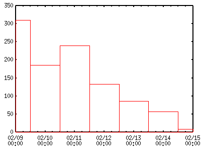
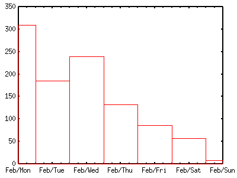

<!DOCTYPE HTML PUBLIC "-//W3C//DTD HTML 4.01 Transitional//EN">
<html lang="ja">
<head>
<title> gnuplot / datetime </title>
<!-- Generated 2004/ 2/15 -->
<!-- $Id: datetime.html,v 1.6 2004/12/19 09:23:44 kawano Exp $ -->
<meta http-equiv="content-type" content="text/html;charset=iso-2022-jp">
<link rel="stylesheet" href="style-new.css" type="text/css">
</head>
<body>
<table width="100%" border="0" cellpadding="0" cellspacing="0">
<tr><td bgcolor="#cccc90" width="320">
    <div align="left">
    <a href="index.html">
    
    </a></div></td>
    <td bgcolor="#cccc90">
      <div align="center"><h3> - not so Frequently Asked Questions - </h3> </div>
      <div class="update"> update 2004/11/15 </div>
    </td>
</tr>
<tr><td bgcolor="#fae8ba"></td>
    <td bgcolor="#fae8ba"><div class="navi"> 
<a href="index.html">           HOME </a> |
<a href="intro/index.html">     INTRODUCTION </a> |
<a href="general.html">         INFORMATION </a> |
<a href="gallery/index.html">   GALLERY </a> |
<a href="datetime-e.html">      ENGLISH </a>
</div></td></tr>
</table>
<hr class="topsep">


<table width="100%" border="0" cellpadding="0" cellspacing="0">
<tr><td id="menu">
 <p> not so FAQ</p>
  <ul>
    <li><a href="legend.html">      $BK^Nc(B(Legend) </a>
    <li><a href="tics.html">        $BL\@9(B(Tics) </a>
    <li><a href="label.html">       $B%i%Y%k(B(Label) </a>
    <li><a href="plot1.html">       2$B<!85%W%m%C%H(B </a>
    <li><a href="plot3d.html">      3$B<!85%W%m%C%H(B </a>
    <li><a href="polar.html">       $B6K:BI8%W%m%C%H(B </a>
    <li><a href="parametric.html">  $BG^2pJQ?tI=<((B </a>
    <li><a href="datafile.html">    $B%G!<%?%U%!%$%k$N?tCM(B </a>
    <ul>
      <li><a href="datafile.html#7.1">
           $B%G!<%?%U%)!<%^%C%H(B </a>
      <li><a href="datafile2.html#7.2">
           $BJ#?t$N%G!<%?$r%W%m%C%H(B</a>
      <li><a href="datafile2.html#7.3">
           $B?tCM$N=$@5(B </a>
      <li><a href="datafile2.html#7.4">
           $B%G!<%?$H%3%^%s%I$N6&B8(B </a>
      <li><a href="datafile2.html#7.5">
           $B%G!<%?$r%9%-%C%W(B </a>
      <li><a href="datafile2.html#7.6">
           $B0lIt$r%W%m%C%H(B</a>
      <li><a href="datafile3.html#7.7">
           UNIX$B$N%3%^%s%I(B </a>
      <li><a href="datetime.html">
           $BF|IU(B/$B;~4V7?%G!<%?(B </a>
    </ul>
    <li><a href="postproc.html">    $B?^$rIA$$$?$=$N8e$O(B</a>
    <li><a href="misc1.html">       $B$=$NB>(B </a>
  </ul>
 <br>
</td>


<td id="content">


<h1><a name="top"> $BF|IU(B/$B;~4V7?%G!<%?$NI=<((B </a></h1>

<div align="center">
<a href="datafile.html">  1 </a> | 
<a href="datafile2.html"> 2 </a> | 
<a href="datafile3.html"> 3 </a> |
<a href="datetime.html">  4 </a>
</div>


<h2><a name="S1"> $B;~7ONs7?%G!<%?$rMQ0U$9$k!%(B</a></h2>

<p> $B%G!<%?$,F|$K$A$d;~4V$H$J$C$F$$$k;~7ONs%G!<%?$r%W%m%C%H$9$k$K$O!$$^$:(B 
     <tt> set xdata time </tt>$B$d(B<tt> set ydata time </tt> $B$r;H$C$F%G!<%?(B
     $B$,F|IU7?$G$"$k$3$H(Bgnuplot$B$K65$(!$$5$i$K(B <tt> set timefmt </tt> $B$GF|(B
     $BIU(B/$B;~4V$NI=<($,$I$N$h$&$K$J$C$F$$$k$+$rM?$($kI,MW$,$"$j$^$9!%;O$a$K(B
     $B%G!<%?$H$7$F$O0J2<$N$h$&$J$b$N$r9M$($^$9!%(B</p>

<pre class="file">
2004-02-09  310
2004-02-10  185
2004-02-11  239
2004-02-12  132
2004-02-13   85
2004-02-14   57
2004-02-15    8
</pre>

<p> $B$3$NF|IU$N%G!<%?$r(Bgnuplot$B$KFI$_9~$^$;$k$K$O!$(B<tt>timefmt</tt>$B$H$7$F(B 
     "%Y-%m-%d" $B$rM?$($^$9!%$3$NNc$G$O7n$HF|$K$A$,(B10$BL$K~$N;~$KF,$K%<%m$r(B
     $B%Q%G%#%s%0$7$F7e?t$r$=$m$($F$$$^$9$,!$$3$l$r$7$J$/$H$b(B($BNc$($P(B
     2004-2-9$B$H$$$&%G!<%?$G$b(B)$BF1$8%U%)!<%^%C%H$G@5$7$/FI$_9~$^$l$^$9!%(B
     </p>

<pre class="sample">
gnuplot&gt; set xdata time
gnuplot&gt; set timefmt "%Y-%m-%d"
gnuplot&gt; plot "sample.dat" using 1:2 with boxes
</pre>

<div align="center"></div>


<p> gnuplot$B$G$OF|IU(B/$B;~4V7?%G!<%?$r$+$J$j=@Fp$KFI$_9~$a$k$h$&$K$J$C$F$$$^(B
     $B$9!%%U%!%$%kCf$N%G!<%?I=<0$H(B <tt>timefmt</tt>$B$GM?$($k%U%)!<%^%C%H$N(B
     $BBP1~$NNc$r0J2<$K5s$2$^$9!%(B</p>

<div align="center"><table border="1" bgcolor="#ccffff">
<tr><th>$B%G!<%?I=<(7A<0(B </th> <th> timefmt </th> <th> comment</th></tr>
<tr><td> 2004/4/6      </td> <td> %Y/%m/%d</td> <td> 2004/04/06$B$G$b2D(B</td></tr>
<tr><td> December/96   </td> <td> %B/%y   </td> <td> spelling$B$r4V0c$($k$H(Bwarning$B$,$G$^$9(B </td></tr>
<tr><td> 2004/Jan      </td> <td> %Y/%b   </td> <td> 3$BJ8;z$NN,L>(B </td></tr>
<tr><td> 1970/240      </td> <td> %Y/%j   </td> <td>"%j"$B$O0lG/4V$NBh2?F|L\(B(1-365)</td></tr>
<tr><td> 02:45:03      </td> <td> %H:%M:%S</td> <td> $B;~4V$O(B24$B;~4V@)(B </td></tr>
<tr><td> 1076909172    </td> <td> %s      </td> <td> 1970$BG/(B1$B7n(B1$BF|(B0$B;~$+$i$NIC?t(B</td></tr>
</table></div>


<div class="top"><a href="datetime.html#top"></a></div>
<h2><a name="S2"> $B=PNOJ8;zNs$r@0$($k!%(B</a></h2>


<p> gnuplot$B$OF|IU(B/$B;~4V7?$N%G!<%?$r(BX$B:BI8%G!<%?$H$7$FFI$_9~$`$H!$$=$N%G!<(B
     $B%?$K9g$C$?7A$G(BX$B<4$K%a%b%j$rI=<($7$^$9!%>e$N0l=54VJ,$N%G!<%?$NNc$J$i!$(B
     "$B7n(B/$BF|(B"$B$,=PNO$5$l$^$9!%$7$+$7$J$,$i!$$3$3$G$O$d$dM>J,$J(B"00:00"$B$H$$(B
     $B$&;~4V$^$GI=<($5$l$F$$$^$9!%=PNO$NI=<(7A<0$r@)8f$9$k$K$O(B <tt> set
     format </tt>$B$rMQ$$$^$9!%$3$3$G$N%U%)!<%^%C%H;XDj$O(B<a
     href="tics.html#3.3">$BDL>o$N?tCM=PNO(B</a>$B$H$O0[$J$j!$(BUNIX$B$N%i%$%V%i%j(B
     strftime$B4X?t$G$N%U%)!<%^%C%H$H$J$j$^$9!%(B</p>

<pre class="sample">
gnuplot&gt; set xdata time
gnuplot&gt; set timefmt "%Y-%m-%d"
gnuplot&gt; set format x "%b/%a"
gnuplot&gt; plot "sample.dat" using 1:2 with boxes
</pre>



<p> $B>e$NI=$K5s$2$?%U%)!<%^%C%H$K2C$($F!$$3$NNc$N$h$&$K(B "%a" $B$H$$$&(B
     <tt>timefmt</tt>$B$K$O$J$$!$MKF|$r=PNO$9$k%U%)!<%^%C%H$r;XDj$9$k$3$H(B
     $B$,2DG=$G$9!%>\$7$/$O(Bstrftime$B4X?t$N%^%K%e%"%k$r;2>H$7$F$/$@$5$$!%?'!9(B
     $B$J=PNO$,2DG=$G$9$,!$8=<BE*$K$O>e$NI=$K5s$2$F$"$k$h$&$J(B Y, y, m, d,
     H, M, S $B$G==J,$G$OL5$$$G$7$g$&$+!%(B</p>

<br clear="all">
<div class="top"><a href="datetime.html#top"></a></div>
</td></tr></table>
<hr class="topsep">


</body>
</html>

